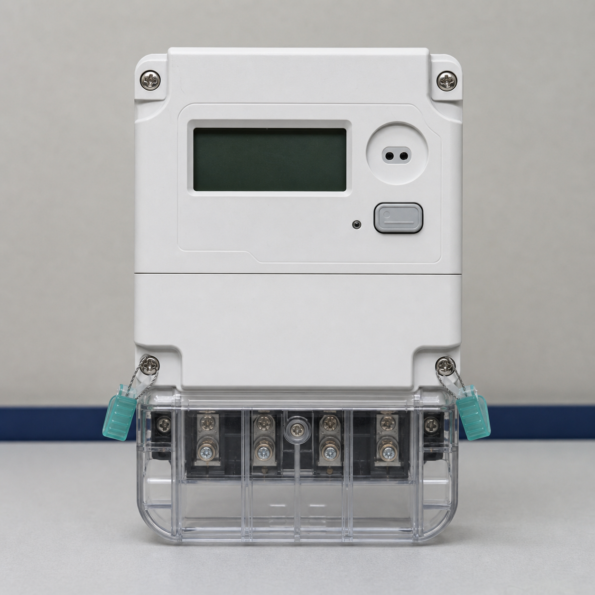
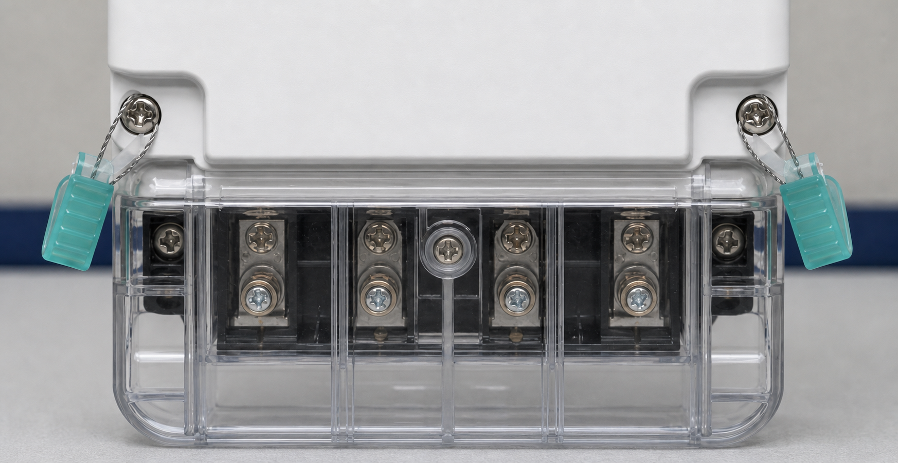
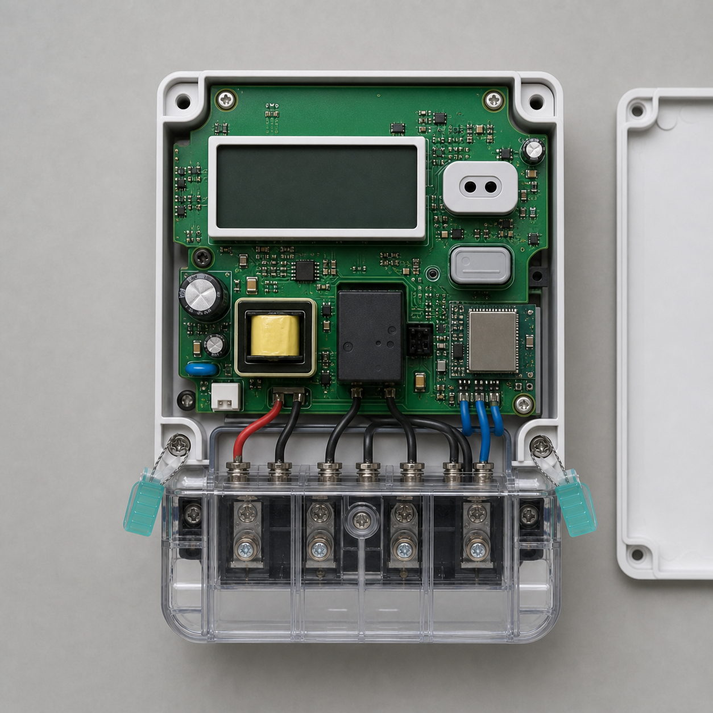
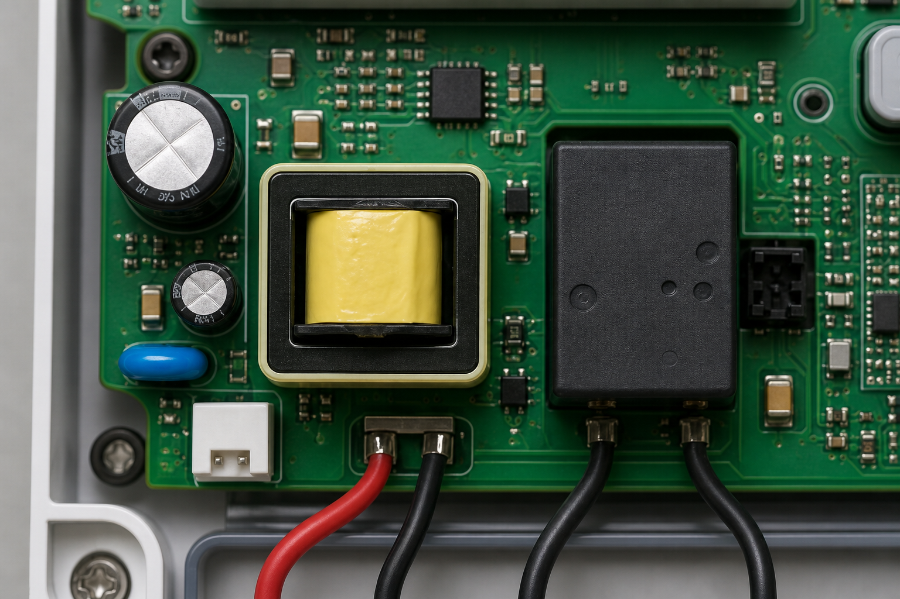

What moves through the system
A physical meter, its digital identity, complaint facts, photographs, genealogy, measurements, hypotheses, approvals, reports, CAPA actions and final disposition.
Kimbal FFR Intelligence is the end-to-end system that moves each returned smart meter through intake, evidence preservation, laboratory diagnosis, RCA, approval, CAPA and population learning.

The system connects case flow, physical meter flow, evidence flow and approval flow in one traceable record.
A case starts with a returned meter and complaint reference. Every system action adds structured evidence or changes a governed state. The case finishes only when technical closure, commercial closure and CAPA closure have each reached their own approved endpoint.
The application coordinates the returned meter, enterprise references, laboratory work, diagnostic reasoning and governed decisions. Nothing is passed between disconnected files; every stage reads from and writes back to the same case.
A physical meter, its digital identity, complaint facts, photographs, genealogy, measurements, hypotheses, approvals, reports, CAPA actions and final disposition.
Every transition has prerequisites, an owner, a timestamp, an evidence trail and a defined output. Unsafe, incomplete or unauthorized transitions are blocked.
The case can only move forward when the current state has produced its required evidence. Exceptions branch to controlled queues and return to the main flow after resolution.
Input: complaint, return and GRN. System: assigns case ID, owner, SLA and custody record. Output: received case.
Input: reported, printed, optical, SAP, MES and WMS IDs. System: compares all sources. Output: matched identity or exception.
Input: identity, photos, genealogy and custody. System: checks completeness and blocks intervention. Output: test-ready evidence pack.
Input: approved variant recipe. System: validates safety, fixture and calibration, then records raw results. Output: reproduced symptom and baseline signature.
Input: observations and measurements. System: ranks hypotheses and selects the next discriminating test. Output: evidence-backed causal conclusion.
Input: structured causal chain and evidence links. System: creates internal and customer-safe drafts. Output: approved technical closure.
Input: approved RCA and disposition. System: tracks CAPA, repair order, replacement, retention and destruction. Output: independent closure states.
Input: confirmed causes, signatures and batch links. System: clusters recurrence and monitors CAPA. Output: alerts, containment and updated rules.
The prototype follows fictional case FFR-2026-04782 from intake through agentic diagnosis, approval, CAPA, replacement and population learning.



Reported, printed, SAP, MES and WMS identities match. MES genealogy is frozen and the evidence gate marks the meter ready for controlled testing. HES evidence is not required in the initial implementation.
The display remains blank on battery and controlled mains. External inspection shows no impact, burn, moisture or seal anomaly.
The input path and rectified high-voltage rail are healthy, but low-voltage electronics do not boot and the 3.3 V rail is absent.
Before the next test, the platform keeps four explanations alive.
Failed function: low-voltage control electronics. Subsystem: power supply. Node: 3.3 V regulator stage. Mechanism: internal regulator failure. Origin remains probable pending batch and supplier analysis.
A CAPA screens 1,248 potentially affected meters from the PCB batch, preserves regulator samples, reviews the supplier and evaluates an enhanced PSU signature / powered-soak test.
These are not separate applications. Each module reads the same typed case entities and advances a specific part of the end-to-end workflow. Open any module to see its input, processing logic, output and handoff.
Controls the flow of work across cases, people, stations and integrations.
Creates the digital case and decides whether the return is ready to enter diagnosis.
Acts as the single source of truth throughout the complete case lifecycle.
Turns approved test instructions into safe, repeatable and traceable measurements.
Chooses the smallest safe test sequence that can separate competing causes.
Converts resolved evidence into governed conclusions and controlled communications.
Turns an approved root cause into owned action and measured prevention.
Connects individual cases to wider product, supplier and manufacturing patterns.
Defines the rules, permissions and versioned knowledge used by every other module.
The system is not one unrestricted AI. Coordinated specialist agents operate over structured evidence and approved actions; high-consequence decisions remain governed.
The core platform does not copy entire enterprise systems. Simulated adapters request only the required fields, reconcile them to the case identity, retain source references and expose partial or unavailable states. Production adapters will follow the same contract.
Read: GRN, material and customer. Match: case and meter identity. Write later: approved repair-order and replacement status.
Read: BOM, PCB batch, firmware, line tests and rework. Match: manufactured serial. Return: confirmed failure and CAPA feedback.
Read: receipt, batch and location. Match: custody event. Write later: quarantine, retention, movement and destruction status.
Later read: communication, event, relay and outage history. Align: timestamps to removal. Use: strengthen or contradict lab hypotheses.
Read: immutable first extraction. Preserve: raw trace and errors. Decode: approved objects without reset or configuration write.
Reports are generated from a structured evidence graph so they remain searchable, comparable, explainable and useful for population analytics.
Each layer is independently stored, evidence-linked and confidence-rated.
The action remains attached to the case, population, owner, evidence and effectiveness result.
The mature system is judged by turnaround time, correctness and recurrence—not by the number of AI features implemented.
Can the facility process 300 meters per day safely?
Are conclusions correct and systemic patterns found?
Does automation save work without hiding errors?
What is happening by utility, AMISP and deployment?
The roadmap deliberately earns autonomy. Digital traceability and standardized physical workflow come before advanced reasoning and auto-release.
Current workflow, ontology, complaint codes, test catalogue, safety rules, equipment and historical cases.
Case management, identity, SAP/MES/WMS evidence, chain of custody, SLA and structured RCA. HES is deliberately excluded from this foundation phase.
Guided photos, safe-power screening, battery/mains tests, optical extraction, core suite and teardown gates.
Complaint routing, deterministic decision trees, hypothesis templates, stop rules and report generation.
Hypothesis ranking, next-best-test selection, equipment scheduling and contradiction detection.
External/PCB observation models, golden-reference alignment, schematic-linked probe guidance and expert knowledge capture.
Add the HES adapter and chronology rules, then combine field signals with clustering, exposure estimation, MES feedback and CAPA effectiveness.
Only approved, repetitive, low-risk classes with complete evidence, calibrated confidence and sampled audits.
It demonstrates the logical states, information movement, controls and decisions. All integrations and instrument actions are simulated; production adapters will be implemented incrementally.
Each field failure becomes preserved evidence, a defensible diagnosis, corrective action, a product or process change and a measured reduction in recurrence.